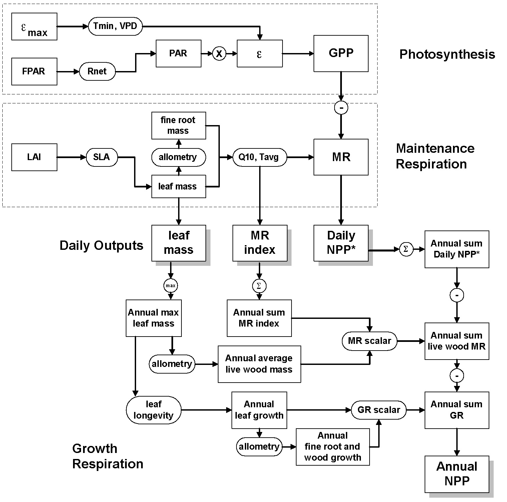

It’s summer, with all sorts of associated distractions, and I slacked this past week. Nevertheless, I want to ensure that the next installments are supported with solid facts rooted in direct measurements. My apologies for being late, and terse, with this one.
Last time, I ended with two questions:
In any given area, are trees the best use of the land for carbon sequestration?
Does it even matter what is planted?
How should these questions be answered? Of course, with data! And the most valuable data is from primary, unbiased measurements that haven’t been massaged, modeled, or manipulated to support publication in an ‘influential’ scientific journal.
I’m pretty sure that academics and modelers of all sorts could have a field day dissecting these questions from every possible angle! It’s an entire research program supportable by government grants, and it might even be influential if Earth had some form of “central planning committee” governed by Science. But that’s not the world we live in.
Let’s look at the first question from an experimentalist’s perspective. While it is evident that, per acre, forests will contain more carbon than, say, a corn field (trees are more extensive than corn stalks), that’s not the question. Instead, the question is, “Will forests capture and store more carbon than other land use options?” This measurement is what ecologists call “Net Primary Productivity”, or NPP. For any ecosystem, NPP is a number that is the difference between “Gross Primary Productivity” (GPP), the amount of carbon dioxide absorbed, and respiration, the amount of carbon dioxide released. It is a pretty straightforward concept.
Can NPP be measured over time and on all land? It turns out that NASA has placed instruments on satellites capable of observing what’s happening at the surface. One, called the Moderate Resolution Imaging Spectrophotometer (MODIS), can capture a two-dimensional surface image and then analyze each pixel’s spectrum. It’s pretty straightforward to measure GPP because it is related to the amount of light (at specific wavelengths). But, it’s hard to measure respiration, so scientists must make many adjustments.
Here’s the actual process from this document.

Let’s step through this. What can be measured using MODIS are FPAR, LAI, Tmin, and VPD. FPAR is how much light is available, while Tmin and VPD are reductions that account for temperature changes and water availability. These adjust the maximum capture efficiency, epsilon_max, to provide an energy conversion efficiency per unit area over time, measured in Kg C/MJ/m2/day. These numbers combine to give the GPP. The LAI (Leaf Area Index) is how much (two-dimensional) area is covered by leaves (which varies with the season). This number is then extrapolated empirically (“allometrically”) to calculate how much biomass is present both above and below ground, and the amount of energy needed to maintain that biomass is calculated as the “Maintenance Respiration”. The “Daily NPP” is then calculated based on the difference.
Then, the Daily NPP numbers are added up over an entire year. But there are two problems: First, plants use more energy (and capture more carbon) when actively growing. And trees use energy even when they’ve lost their leaves, and that’s not accounted for based on measuring leaves from space. So, there are corrections to the sum for these factors, the “live wood maintenance respiration” and the “growth respiration”.
The bottom line is that there’s a lot of empirical modeling that goes into the estimation of an annual NPP from space. So it’s pretty far from direct measurement. But what can we learn from the processes (on the ground) that enable the conversions?
Next time, we will start with the second question, “Does it matter what is planted?” because that will allow us to examine the empirical extrapolations needed for global measurements. An excellent method for measuring NPP directly called “Eddy Flux Covariance”. has been developed to compare carbon exchange over different land areas. This method measures air’s directional flow (flux) and composition simultaneously. When air flows toward a section of living ground, it has a different CO2 level than when it flows away from the ground. The difference gives NPP, not just from empirical models but from direct measurement.